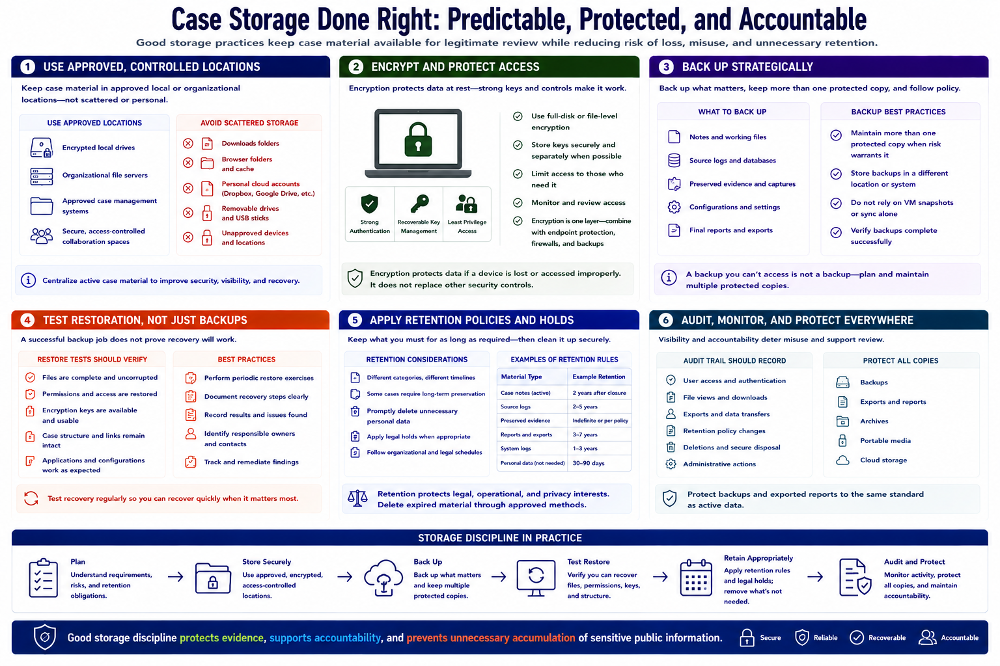

Data Storage, Backups, and Retention
Connecting to LMS... Progress: in progress

Narration
Case storage should be predictable, access controlled, and protected against loss. Keep active material in approved local or organizational locations rather than scattered downloads, browser folders, personal cloud accounts, and removable drives.
Encrypted storage helps protect case material if a device or drive is lost or accessed improperly. Encryption depends on strong authentication and recoverable key management. It does not replace least privilege, secure sharing, endpoint protection, or backups.
Use a backup strategy that covers notes, source logs, preserved evidence, configuration, and final reports according to policy. Maintain more than one protected copy when risk warrants it, and avoid treating virtual-machine snapshots or sync alone as a complete backup.
Test restoration. A successful backup job does not prove that files, permissions, keys, and case structure can be recovered. Periodic restore exercises should verify integrity, document recovery steps, and identify who is responsible during device failure.
Retention policies define how long each category of material remains. Some cases require preserved records; others require prompt cleanup of unnecessary personal data. Apply legal holds and organizational schedules where applicable, then delete expired material through approved methods.
Audit trails should record significant access, exports, transfers, retention changes, and deletion when the risk requires it. Protect backups and exported reports to the same standard as active data. Storage discipline keeps evidence available for legitimate review without creating an indefinite archive of sensitive public information.